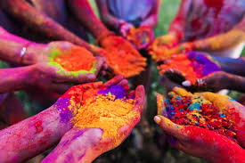
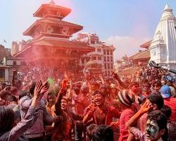

Nepali Culture Explorer
Nepali Culture ExplorerHoli
होली(फागु पूर्णिमा)
होली रङ्ग, खुसी र वसन्त ऋतुको आगमनको प्रतीकका रूपमा मनाइने असत्यमाथि सत्यको विजयको महान् पर्व हो।
- तिथि: फागुन/चैत (फागु पूर्णिमा)
- मुख्य सन्देश: भाइचारा, समानता, र नयाँ सुरुवात
- मुख्य आकर्षण: अबिर/रङ्गको खेल, साङ्गीतिक कार्यक्रम, र तराईको जोगिरा/महामूर्ख सम्मेलन
Visuals of Holi


Holi Music
होली किन मनाइन्छ र यसको पौराणिक कथा?
होली मनाउनुको पछाडि मुख्यत: भगवान् विष्णुका भक्त प्रह्लाद र पापी दैत्य राजा हिरण्यकशिपुको कथा जोडिएको छ:
- होलिका दहन: हिरण्यकशिपुकी बहिनी होलिकाले आगोले नछुने वरदान पाएकी थिइन्। उनले भक्त प्रह्लादलाई मार्न आगोमा लिएर बसिन्, तर भगवान् विष्णुको कृपाले ईश्वरभक्त प्रह्लाद बचाउनुभयो र पापी होलिका आफैँ जलेर भस्म भइन्। त्यही असत्य र पापको अन्त्य भएको खुसीयालीमा फागु पूर्णिमाको अघिल्लो रात 'होलिका दहन' गरी भोलिपल्ट होली मनाइन्छ।
- कृष्ण र राधाको प्रेम: द्वापर युगमा भगवान् श्रीकृष्णले राधा र गोपिनीहरूसँग रङ्ग खेलेर होली मनाउनुभएको मान्यता पनि छ, जसले यसलाई माया र मित्रताको पर्व बनायो।
होलीको सांस्कृतिक तथा ऐतिहासिक महत्त्व
होलीको महत्त्व केवल रङ्ग खेल्नुमा मात्र सीमित छैन:
- ऋतु परिवर्तन र प्राकृतिक उल्लास: होलीले जाडो यामको अन्त्य र हरियाली भरिएको वसन्त ऋतु (Spring Season) को आगमनलाई जनाउँछ। रुख-बिरुवामा नयाँ पालुवा र फूलहरू फुल्ने भएकाले प्रकृति आफैँ रङ्गीचङ्गी बन्छ।
- रिस-राग बिर्सने दिन: यस दिन मानिसहरू पुराना शत्रुता, रिस-राग र मनमुटाव बिर्सेर एक-अर्कालाई रङ्ग लगाउँछन् र अँगालो हालेर मित्रता नवीकरण गर्छन्।
- प्राचीन रङ्ग र स्वास्थ्य: पौराणिक कालमा होली खेल्न नीम, बेसार, केशर र सुकेका फूलहरूबाट प्राकृतिक रङ्ग बनाइन्थ्यो, जसले छालाको स्वास्थ्य र शरीरको ऊर्जा बढाउन मद्दत गर्थ्यो।
होली कसरी मनाइन्छ?
- होलिका दहन: होलीको अघिल्लो साँझ दाउरा/पराल बालेर नकारात्मक ऊर्जाको अन्त्य गरिन्छ।
- रङ्ग र पानीको खेल: एक-अर्कालाई अबिर, रङ्ग र पानी छ्यापेर खुसी साटासाट गरिन्छ।
- नाचगान र पकवान: गीत-सङ्गीतका साथ 'मालपुवा', 'गुझिया' जस्ता मीठा परिकार खाइन्छ।
कुन ठाउँमा कसरी?
- पहाडी भेग (काठमाडौँ, पोखरा): फागु पूर्णिमाका दिन वसन्तपुरमा 'चिर' गाडेर सुरु हुन्छ। वसन्तपुर र पोखरा लेकसाइडमा कन्सर्ट र डिजे म्युजिकमा होली मनाइन्छ।
- तराई/मधेस भेग (जनकपुर, वीरगञ्ज): पहाडको भोलिपल्ट मनाइन्छ। जनकपुरको 'जोगिरा' (व्यङ्ग्य गीत), महामूर्ख सम्मेलन र बिहान माटो/हिलो खेल्ने विशेष परम्परा छ।
Holi's Most Beautiful Aspect
"होलीको सबैभन्दा सुन्दर पक्ष भनेको 'रङ्गहरूले ल्याउने समानता र भाइचारा' हो। जब अनुहारमा रङ्ग पर्छ, जात, धर्म र धनी-गरीबको सीमा मेटिन्छ। पुराना रिस-राग बिर्सेर मुस्कुराउँदै एक-अर्कालाई अँगालो हाल्नु र प्रकृतिसँगै खुसी मनाउनु नै होलीको साँचो सुन्दरता हो।"